多模态表示学习笔记
最近在学习融合视觉和自然语言两种模态的学习方法。
本文总结了最近多模态BERT的相关研究。
ViLBERT
模型架构
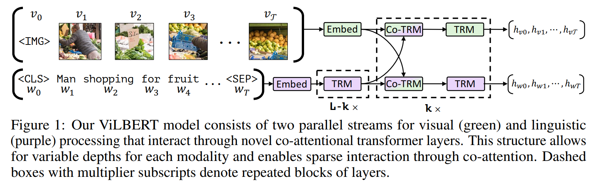
整体为两路模型。图像一路，文本一路。图像首先经过特征提取，得到各个region的特征，文本则使用正常BERT架构，得到每个单词的表示。不同的一点在于，在两路之间进行了co-attention交互，如下图所示。
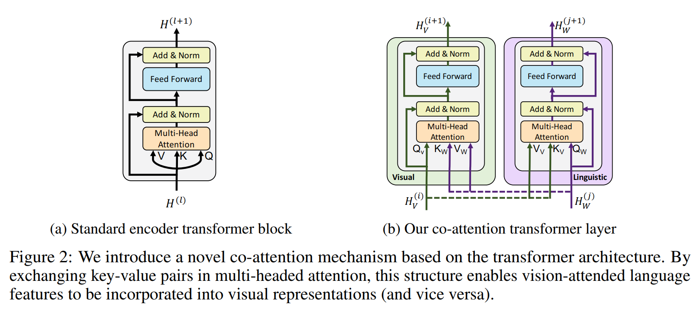
在图像路，Q来自图像特征，K和V来自文本特征；在文本路，Q来自文本特征，K和V来自图像特征。
（其实这里我感觉，应该在图像路，K和V来自图像，Q来自文本；在文本路，K和V来自文本，Q来自图像。因为最后保留的是Value的值，所以感觉以Value值为准更合理。不过这只是叫法的不同，对结果应该没有影响。）
模型训练
预训练任务包括：
masked multi-model modelling
- 对于文本，与BERT中处理方式相同。mask掉15%的内容。
- 对于图片，mask掉15%的region，其中90%被替换为0，10%保持不变。对于图片部分的监督，使用编码阶段的特征抽取器得到的每个region的分布作为监督，利用与标准region分布之间的KL散度作为损失函数。
multi-model alignment prediction
- 给定图片-文本对，(IMG, v1, v2, …, vT, CLS, w1, w2, …, wT, SEP)，模型预测二者是否匹配（即文本是否为图片的描述）。具体方法是将图片的输出特征h_{IMG}和文本的输出特征h_{CLS}进行element-wise乘积，得到最终的表示，经过线性层进行判断。
模型测试
测试任务包括四个：
Visual Question Answering (VQA).
- 回答关于图片的一些问题。在VQA2.0数据集上做的，该数据集包含1.1M关于COCO图片的的问题，每个问题有10个答案。
Visual Commonsense Reasoning (VCR).
- 给定一个图片，该任务包含两部分：（1）visual question answering（Q->A)和（2）answer justification （QA->R)。两个任务都是多选题。整个任务(Q->AR)需要模型选择出问题的正确答案，并给出选择答案的原因。VCR数据集包含从110k电影片段中得到的290k多选问题。
Grounding Referring Expressions.
- 给定一段文本描述，在图中定位出对应的部分。在RefCOCO+数据集上进行训练和评估的。
Caption-Based Image Retrieval.
- 给定一段描述图片内容的标题，从图片集合中检索出对应的图片。在Flickr30k数据集上进行训练和评估。该数据集包含Flickr上获取的31k图片，每个图片对应5个标题。
‘Zero-shot’ Caption-Based Image Retrieval.
- 直接在Flickr30k数据上进行Caption-Based Image Retrieval，不进行fine-tuning。
VisualBERT
模型架构
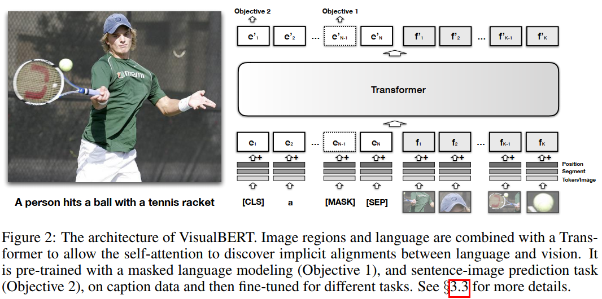
模型架构上采用单路架构，即图片和文本都通过一路共享的Transformer。对于图像和文本的融合，是将单词token的表示和图像region的表示拼接起来，一起送入Transformer的。
在文本方面和基本的BERT一致。
对于图像方面，引入了额外的visual embeddings来对图像进行建模。每个embedding对应图像中的一个bounding region（由object detector得到的）。
每个region的embedding是三个部分的和：（1）region的表示（2）segment embedding表示该单元是一个图像，而不是文本（3）position embedding。这里的position embdding只有在有word和region的对其关系的情况下使用，设置为对应的单词的位置编码的和。
模型训练
- Task-Agnostic Pre-Training
(1) Masked language modeling with the image.
文本的一部分单词被mask，而对应的图像不mask。
(2) Sentence-image prediction
将两个caption拼成一个segment，其中一个是描述图片的caption，另一个50%的概率是描述图片的caption，50%的概率是随机的一个caption。模型来学习区分这两种情况。
Task-Specific Pre-Training
在fine-tuning之前，使用对应任务的数据进行预训练，会对性能有提升。预训练的目标还是上面的两个目标。Fine-tuning
在具体下游任务上进行微调。
模型测试
Visual Question Answering (VQA 2.0)
Visual Commonsense Reasoning (VCR)
Natural Language for Visual Reasoning (NLVR2)
该任务是判断给定的自然语言caption是否正确描述了一对图片。
Region-to-Phrase Grounding (Flickr30K)
该任务是对给定的phrase，识别其在图中的bounding region。
Unicoder-VL
模型架构
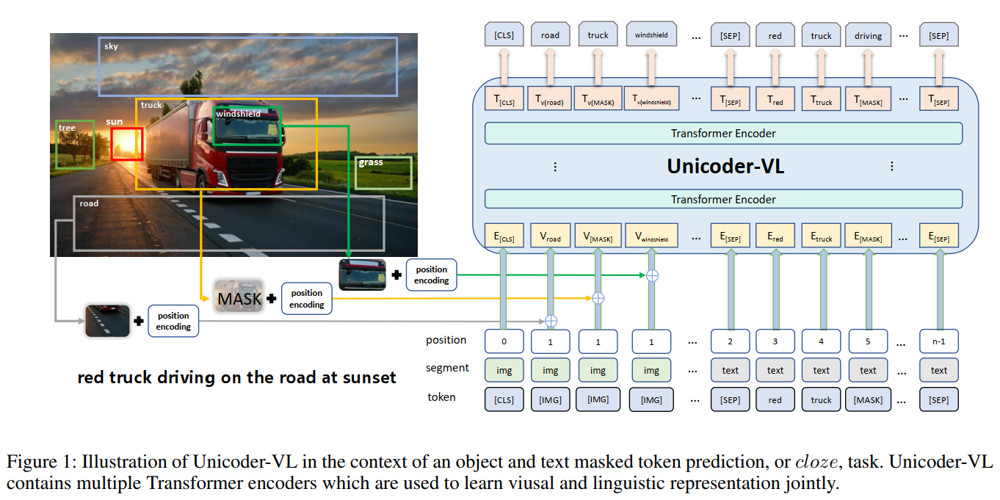
模型整体采用单路架构。即将文本特征与图像特征先进行拼接融合，然和一起输出Transformer。
模型的输入是 （图像，文本）对，模型首先对输入图像的regions和文本的tokens学到表示，然后这些表示一起输入到多层的Transformer中。
- 语言表示：对于文本的表示，与基础BERT相同，分词得到tokens，并加入[CLS]以及[SEP]等特殊符号。对于视觉元素，token采用[IMG]符号。最终的表示是word embedding + position embdding，然后经过一层LN。这些表示都由BERT初始化。
- 图像表示：对每个输入图像，使用Faster R-CNN来为每个region抽取特征。同时对于位置信息，使用一个5维的向量：$b=(\frac{x_1}{W}, \frac{y_1}{H}, \frac{x_2}{W}, \frac{y_2}{H}, \frac{(y_2 - y_1)(x_2 - x_1)}{WH})$，其中$x_1, y_1$, $x_2, y_2$分别表示region的左下和右上坐标，最后一项表示region所占图像的百分比。W和H分别表示图像的宽和高。图像的特征和位置特征都经过FC层，输出再相加，再经过LN层，得到最终表示。
模型训练
Masked Language Modeling (MLM).
随机将15%的token替换为[MASK]，然后利用周围的单词以及region特征来预测被mask的单词。Masked Object Classification (MOC).
随机将15%的region进行mask，其中，90%特征被直接替换为0，10%保持特征不变。在监督的时候，直接使用detection模型检测出的置信度最高的目标类别作为标准标签。将每个masked region的表示经过FC层进行分类，预测其属于每个类别的概率，并计算与标准标签的交叉熵损失。Visual-Linguistic Matching (VLM).
该任务学习实例级的对齐(instance level)。将最后的[CLS]的表示作为图像和文本融合后的整体的表示，然后用一个FC层来判断，文本与图像是否匹配。在训练的时候，采样的image-sentence对有正样例也有负样例。
模型整体的损失就是三部分损失的和。
$$
L = (L_{MLM} + L_{MOC}) \cdot I[y=1] + L_{VLM}
$$
其中y=1表示采样的image和sentence是匹配的情况。
R@K (K=1,5,10). R@K is the percentage of ground-truth matchings appearing in the top K-ranked results.
模型测试
Image-Text Retrieval.
根据文本描述检索图像，或者反过来。
使用了两个数据集：MSCOCO，Flickr30k
在微调的过程中，使用triplet loss来训练，同时采样正样例和负样例，并使正样例与负样例的间距尽可能大。Zero-shot Image-Text Retrieval
不在对应的数据上进行微调，直接进行检索任务。
用来说明预训练已经能够使模型具备一定程度的从文本到图像的泛化能力。Visual Commonsense Reasoning.
包含两个任务：(Q->A)以及(QA->R)，两个任务都是多选任务。
LEXMERT
模型架构
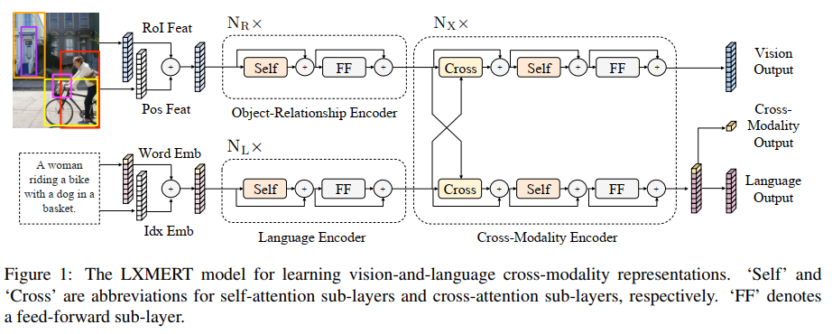
模型整体架构类似于双流模型，即文本和图像分别用两个Transformer based encoder来进行编码，然后使用跨模态的Transformer来融合。
Input Embeddings：
单词级别的编码器将词向量与位置向量相加，然后经过LN层。目标级别的图片表示将目标检测得到的目标的ROI表示与位置表示都映射到同一空间，然后经过LN层，再相加除二得到最终表示。
Encoders：
Single-Modality编码器分别对文本和图像进行编码。与标准的Transformer基本上类似，都是自注意力层+FF层+residual connection。
Cross-Modality编码器对文本和图像两个模态进行信息交换。与ViLBERT中的co-attention很像，都是通过进行交叉注意力（即替换注意力中的QKV）来实现两个模态之间的交互。
Output Representation：
输出包括三部分表示：（1）Vision Output （2）Language Output （3）Cross-Modality Output。
Vision output是图像中各个目标的表示，是一个序列。Language Output是文本中每个token的表示，也是一个序列。Cross-Modality Output是将Language部分的[CLS]作为跨模态的表示。
模型训练
包括五个预训练目标：
Language Task: Masked Cross-Modality LM
就是普通的Masked Language Model，只不过增加了vision的部分作为context。vision部分没有被mask，相当于只mask了单模态。Vision Task: Masked Object Prediction
以15%的概率mask掉图像中的一些objects，然后模型预测这些被mask的目标。这里模型也可以根据其余的未mask的vision context来预测目标，也可以根据文本context来预测，因此能够促使模型学习object之间的relation以及object与language之间的对应。
这里使用了两个子任务作为目标：（1）RoI Feature Regression：用L2损失来回归目标的RoI特征；（2）Detected-Label Classification：使用目标检测器（Faster R-CNN）的检测结果作为标准标签，来计算分类损失。Cross-Modality Matching
采样正样例和负样例，模型预测句子和图片是否匹配。Image Question Answering (QA)
数据集中很多图片对应的句子是对于图片内容的疑问句，因此，这里提出使用QA来作为预训练任务。当句子和图片匹配时，使模型回答对应的问题。
模型测试
VQA v2.0 dataset：回答和图片有关的问题。2.0数据集每个图片平均有5.4个问题，总共1.1M问题。相比于1.0数据集，VQA2.0减小了答案的偏向。
GQA也是图像问答任务。与VQA不同的是，GQA需要更多的推理技能，例如空间上的理解或者多步推理。数据集中包含22M问题。
NLVR2也是一个视觉推理数据集，每个样本包含两个相关的图片和一个句子，任务就是预测这个句子和两个图片是否匹配。
VL-BERT
模型架构
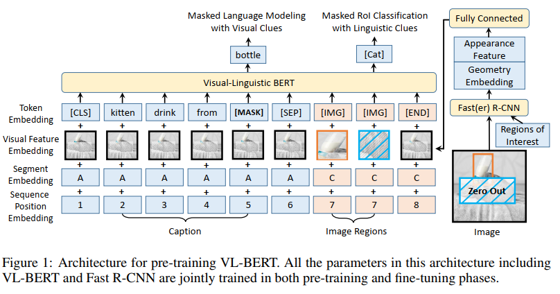
模型整体属于单路架构，即文本和图片融合之后再通过同一个Transformer。
传统的BERT只能接受文本token的输入。这里的输入是文本token和图片的RoI特征。
模型与前面不一样的地方在于，这里的图片的特征提取部分也一起进行end-to-end训练。而之前都是fix的。
输入开始是[CLS]符号，每个句子以及句子和图像之间用[SEP]分割，结尾用[END]标记。
对于每个输入元素，其表示包括四个部分：（1）token embedding（2）visual feature embedding（3）segment embedding（4）sequence position embedding。其中visual feature embedding是新引入的，其他的都是原来BERT中就有的。
（1）Token embedding：跟原始BERT中一样，只是加了一个特殊的符号[IMG]表示vision元素。
（2）Visual feature embedding：对于visual元素，包含visual appearance feature和visual geometry feature，前者就是Faster R-CNN得到的RoI特征（2048维），后者就是4维的位置向量：$(\frac{x_{LT}}{W}, \frac{y_{LT}}{H}, \frac{x_{RB}}{W}, \frac{y_{RB}}{H})$，经过FC层变为2048维。这两者拼起来经过FC层作为最后的Visual feature embedding。
（3）Segment embedding：分为3类：A和B分别表示第一句话与第二句话的segment，C表示视觉元素的segment。
（4）Sequence Position Embedding：可学习的位置编码。由于对于图片中的visual元素来说，它们之间没有绝对的顺序，因此任意交换顺序应该不改变效果，所以visual元素的位置编码都设为一样。
模型训练
在visual-linguistic数据和text-only数据上进行了训练。
Masked Language Modeling with Visual Clues
就是MLM，只是context变成了其他没有mask的单词和visual元素。Masked RoI Classification with Linguistic Clues
随机mask RoI，然后模型预测被mask的RoI的类别。不同的是，这里是在原图片的像素级别进行mask，而不是像前面的方法一样，直接mask features。因此这里连着前面的图像特征抽取器Faster R-CNN一起训练了。分类标签使用的就是Faster R-CNN的分类结果。
对于只有文本的预训练，输入就变成了<TEXT, >，即只有文本，没有图片。模型中的visual feature embeddings就是一个所有单词共享的可学习的表示。损失就是标准的MLM的损失。
模型的输入格式包含两种：<Caption, Image>和<Question,Answer, Imgae>，这两种输入基本上能够覆盖大多数的下游任务。输出的[CLS]的表示作为完整的Sentence-Image-Relation级别的预测。单词或者RoI的表示用于单词级别或RoI级别的预测。
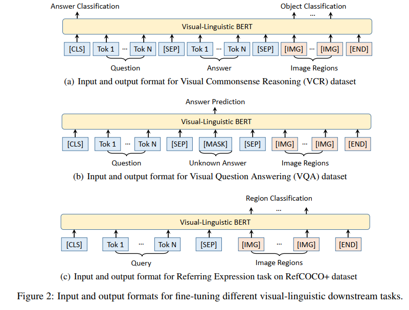
模型测试
VCR
VQA在VQA2.0数据上评估。
REFERRING EXPRESSION COMPREHENSION
指称短语是指图像中的物体的自然语言短语。该任务是定位短语所指定的目标在图像中的位置。在RefCOCO+数据集上进行评估。
UNITER
模型架构
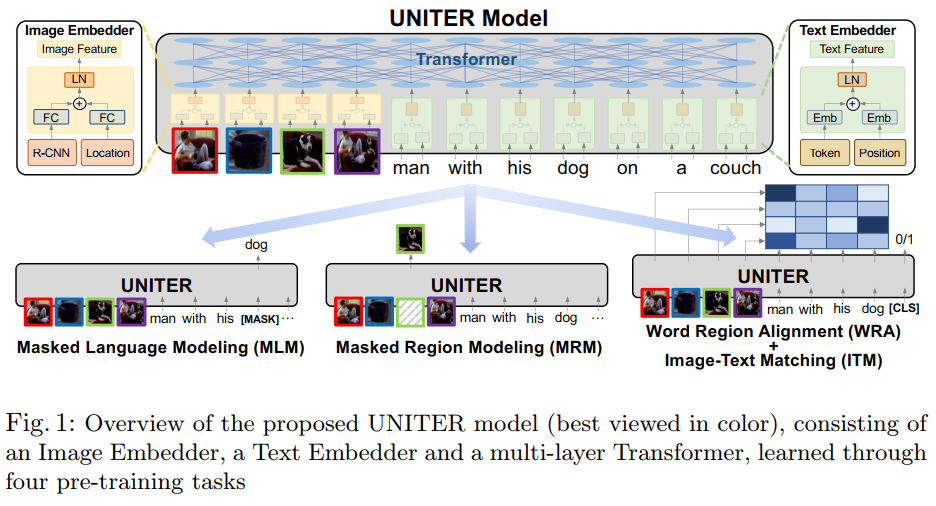
模型整体属于单路架构，即文本与图像先进行拼接融合，再输入到Transformer中。
文本和图像分别先由Text Embedder和Image Embedder进行编码。
对于Image Embedder使用Faster R-CNN抽取每个region的特征（pooled RoI features）。位置编码用一个7维的向量（x1, y1, x2, y2, w, h, w*h)。
特征和位置编码都经过FC层映射到统一维度空间，相加，经过LN，得到最终的视觉表示。
对于Text Embedder，每个sub-word的表示就是词向量加位置编码，然后经过LN层。
模型训练
包括四个预训练任务：
Masked Language Modeling conditioned on image regions (MLM)
就是masked language model，随机mask单词，然后根据context预测被mask的单词。只是这里每次只mask一个模态，图像部分不mask，因此可以根据剩余文本和全部图像作为context，预测被mask单词。Masked Region Modeling conditioned on input text (MRM)
随机mask图像的某些region，将对应region的特征向量变成0。同样也是每次只mask一个模态，文本部分保持完整。
包含三个变种：(1) Masked Region Feature Regression (MRFR)：使用L2损失来回归原始的RoI features。（2）Masked Region Classification （MRC）：建模为分类任务，标签就用Faster R-CNN的检测结果。（3）Masked Region Classification with KL-Divergence (MRC-kl)：使用模型输出与detector的输出之间的KL散度作为损失。Image-Text Matching (ITM)
学习图像和文本之间实例级别的对齐。通过采样正样例和负样例，计算图像和句子组成的pair的匹配度得分。Word-Region Alignment (WRA)
学习更加细粒度的对齐：单词和region之间的对齐。使用Optimal Transport (OT)进行WRA任务。
在四个数据集上进行预训练：COCO，Visual Genome，Conceptual Captions，SBU Captions。只用图片-文本对来进行训练。
模型测试
模型在六个任务上进行测试：
对于VQA，VCR和NLVR2任务，模型输入一个图片（或一对图片）和一个自然语言问题（或描述），模型预测一个答案（或判断描述的正确性）。
对于Visual Entailment，在SNLI-VE数据集上进行测试，目标是判断给定的图片是否蕴含了输入的句子。
对与Image-Text Retrieval，使用COCO和Flickr30k数据集，测试了Image Retrieval和Text Retrieval两种性能。
Referring Expression Comprehension要求模型根据给定的查询描述，从一组image region中选择目标。
HERO
模型架构
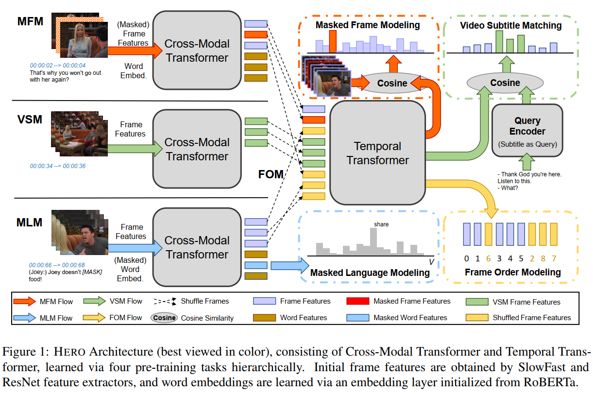
模型的输入是一段video clip，可以看成是一系列frames，以及对应的字幕subtitles。
他们输入Video Embedder和Text Embedder，得到初始表示。
首先，每个frame与其对应的字幕输入一个跨模态Transformer计算他俩的多模态表示。
然后整个video clip的所有frame的表示，构成一个序列，输入时序Transformer来学习全局视频上下文，并得到最终的视频表示。
Input Embedder
对于Text Embedder，将字幕句子分词维sub-word，最终的词表示为词向量加位置编码，经过LN层。
对于Video Embedder，先使用一个预训练的ResNet和Slow-Fast来抽取每一个frame的2D和3D的视觉特征。这些特征拼接输入FC层，映射到与词向量相同的空间。由于video frames是序列化的，因此他们的位置编码可以使用和Text Embedder相同的方式。一个frame的最终表示为FC的输出+位置编码，然后经过LN层。
经过了Input Embedder，就得到了token表示和frame表示
Cross-modal Transformer
对每个字幕句子$s_i$，首先根据句子的token和其对应的frames学习contextualized embedding。使用一个跨模态Transformer，输出是每个token以及每个frame的表示。
Temporal Transformer
得到所有的frame表示之后，使用另一个Temporal Transformer来学习全局的video表示。为了避免丢失位置信息，使用了residual connection。
这里对于视频数据的处理，输入都是按照<字幕句子i，字幕句子i对应的frames>这样的数据对进行处理的。
模型训练
- Masked Language Modeling：该任务是在局部层面进行的，即mask一部分单词，根据其他单词以及该句子对应的frames预测被mask的单词。
- Masked Frame Modeling：该任务是在全局层面进行的，即mask一些frame，根据其他的frames和所有的字幕信息来预测被mask的frame。被mask的frame的特征被替换为0。由于visual features是高维的连续特征，因此这里提出两种损失的建模方式：（1）Masked Frame Feature Regression (MFFR)建模为回归问题，使用模型预测结果与输入特征的L2损失作为优化目标；（2）Masked Frame Modeling with Noise Contrastive Estimation (MNCE)：使模型能够在一群错误候选结果中识别出正确的frame。具体方法是，在模型输出经过FC层准备分类时，随机采样一些其他的frame也经过相同的FC层，作为负样例，最终最小化NEC损失。
- Video-Subtitle Matching：该任务的输入包括：（1）a sampled query from all subtitle sentences;（2）the whole video clip；（3）the remaining subtitle sentences for the video clip。希望模型能够预测：（1）local alignment：对应这个query字幕的frame的起止位置$y_{st}, y_{ed} \in {1, …, N_v}$；（2）global alignment：query对应的是哪个video。
- Frame Order Modeling
输入为（1）所有的字幕句子（2）visual frames（3）重排列序号$\mathbf{r}={r_i}_ {i=1}^{R} \in \mathbb{N}^{R}$，其中R是重排序的frame数，r是重排序的下标集合。随机选择15%的frames进行重排序，目标是恢复他们原本的时间顺序。
模型在TV数据集和HowTo100M数据集上进行预训练。
模型测试
模型在六个数据集上进行测试。
- TVR：text-based video-moment Retrieval，对于一个自然语言查询，模型不仅需要从视频语料库中检索出最相关的视频片段，还需要对检索到的视频片段中的相关时刻进行定位。在TV数据集上进行测试。
- TVQA：是随着TV数据集一起发布的，给一个视频clip和附带的字幕，目标是回答一个关于视频的多选题。每个视频clip有7个问题，每个问题有5个答案。数据中还提供了每个问题相关时刻的起始/结束点。
- VIOLIN：Video-andLanguage Inference，给定一个以字幕对齐为前提的视频clip，模型需要推断出给定的视频clip是否包含自然语言假设，或者与假设相悖
- TVC：a multimodal Video Captioning dataset extended from TVR。目标就是为输入的视频clip生成caption，不同之处是，这里允许使用字幕。
- DiDeMo： text-based video-moment retrieval on single-channel videos (video-only)
- MSR-VTT：text-based video retrieval on single-channel videos (video-only)
对于Text-based Video-moment Retrieval，（TVR，How2R，Didemo，MSR-VTT）可以分解为两个子任务：（1）Video Retrieva 和 （2）Moment Retrieval。模型预测正确需要包含两步：（1）预测的video正确；（2）预测的时间段与ground-truth有较大的重合。
对于video QA任务（TVQA，How2QA，VIOLIN）包含三个子任务：QA on the grounded clip； question-driven moment localization；QA on the full video clip。本文只进行第三个任务，因为第三个任务难度最大。
对于TVC任务，使用BLEU@4，METEOR，ROUGE-L和CIDEr-D进行评估。
ReLoCLNet
Video Corpus Moment Retrieval with Contrastive Learning
模型架构

模型属于两路的方式，即文本和视频使用两个独立的encoder来进行编码，然后之后再进行不同模态之间特征的融合(late fusion)。这种两路分别进行编码的方法在实际检索应用中，具有效率高、检索速度快的好处，因为视频的编码表示都可以预先计算好并存储起来，来一个query，只需要对query进行编码，然后进行检索即可。
而对于单路编码方式来说，每来一个query，都需要将query与所有视频重新计算一遍表示，因此检索耗时长。
Query Encoder
Query Encoder的结构可以如图所示，需要解释一下的就是模型的最后，使用两个注意力来分别得到query的两个表示：一个visual的表示$q_v$，一个subtitle的表示$q_s$。两个表示都是$1\times $d维度，得到的是一个query的两个表示。
Video Encoder
类似的，Video Encoder使用两路分别对visual与subtitle进行编码，最后分别得到visual的表示$H_v \in \mathbb{R}^{n_v \times d}$与subtitle的表示$H_s \in \mathbb{R^{n_v \times d}}$，其中$n_v$表示视频中的frame数，d表示每个frame的表示的维度。
Video Retrieval Module
整体方法简单来说就是在visual与subtitle两个通道，分别计算query与每一帧的相似度得分。
$$
\phi_m = norm(H_m^T) \cdot norm(q_m)
$$
其中$m\in {v,s}$，分别表示visual和subtitle两个通道。$H_m=[h_m^0,…,h_m^{n_v -1}]\in \mathbb{d\times n_v}$表示frame在对应通道下的表示。
得到的相似度得分，选取其中最大的作为query与video的matching：
$$
\phi_m = max(\mathbf{\phi_m}) = max([\phi_m^0, \phi_m^1,…, \phi_m^{n_v -1}])
$$
如果有两个通道的话，就取两个相似度的平均值:
$$\phi = 1/2 * (\phi_s + \phi_v)$$
在训练时采用hinge loss，对每个positive pair $(Q, V)$，采样negative pairs ${(Q^{-}_ {i}, V)}_ {i=1}^{N}$ 与 ${(Q, V_ {i}^{-})}_ {i=1}^{N}$，分别表示替换query与替换video。
假设负样本的相似度得分为$\phi’$ 和 $\phi’’$，则损失为：
$$
\mathcal{L}^{VR}=max(0, \delta + \frac{1}{N} \sum\phi’ - \phi) + max(0, \delta + \frac{1}{N}\sum \phi’’-\phi)
$$
Moment Localization Module
Moment Localization 主要是根据query在video中定位start与end两个时间点。
首先，得到query的表示(为了方便，两个通道统记为$q_m, m\in {s,v}$)，经过一个FC Layer，得到$q_m’$，然后计算query $q_m’$ 与 frames的表示$H_m^T$之间的相似度得分：
$$
S_{mq}=H_m^T \cdot q_m’ \in \mathbb{R}^{n_v}
$$
如果有subtitle通道的话，就令相似度得分为两个通道的平均：$S = 1/2 \times (S_{vq} + S_{sq})$，否则，如果只有视频通道的话，就$S = S_{vq}$。
然后在相似度得分$S$上进行两个1D convolution操作，然后经过softmax分别得到st与ed的在所有frames上的概率分布。
$$
S_{st} = Conv1D_{st}(S) \\
S_{ed} = Conv1d_{ed}(S)
$$
$$
P_{st} = softmax(S_{st})\\
P_{ed} = softmax(S_{ed})
$$
对于一个video-query对，最终的区间就是起始点和终止点乘积得分最大的节点对：
$$
(i^s, i^e) = arg max_{a^{s}, a^{e}} (P_{st}(a^s) \times P_{ed}(a^e))
$$
预测的区间的得分为起始点st与结束点ed的得分乘积：
$$
p^{se} = P_{st}(i^s) \times P_{ed}(i^e)
$$
其中$0 \le i^s \le i^e \le n_v -1$。
因此，整个Moment Localization部分的训练目标为：
$$
\mathcal{L}^{ML} = \frac{1}{2}\times (f_{XE}(P_{st}, Y_{st}) + f_{XE}(P_{ed}, Y_{ed}))
$$
其中$f_{XE}$表示cross-entropy损失，$Y_{st}$ 和 $Y_{ed}$是ground-truth。
Contrastive Learning
本文的一个重点在于使用Contrastive Learning的训练方式。
整体思想简单来说，就是最大化正样例（Positive sample）的互信息，最小化负样例（Negative sample）的互信息。这里正样例指的是query与video（或frame）匹配的数据对，负样例就是query与video（或frame）不匹配的情况。
换句话说，使正样例（匹配）的query与video（或frame）在空间中更加接近，使负样例（不匹配）的query与video（或frame）在空间中尽量远离。
具体分为VideoCL和FrameCL两种。
VideoCL
VideoCL尽量减小匹配的query-video之间的距离，增大不匹配的query-video的距离。
首先使用两个注意力机制，将两个通道下的frame序列的表示$H_m’\in \mathbb{R}^{d\times n_v}$融合成单个的video表示：
$$
\alpha^{m} = softmax(W_{m,a} \cdot H_m’) \in \mathbb{R^{n_v}} \\
c_m = \sum_{i=0}^{n_v -1} \alpha_i^m \times h_{m,i}’
$$
然后给定正样例集合$\mathcal{P}={(c_m, q_m)}$，以及负样例集合$\mathcal{N}={(c_m’, q_m’)}$，使用NCE损失来计算VideoCL 得分：
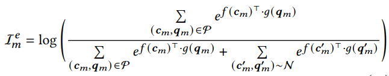
其中，指数项$e^{f(c)^T \cdot g(q)}$表示c与q之间的互信息。$f(\cdot)$和$g(\cdot)$将c和q映射到同一空间。同样，如果有两个通道的话，就取平均：$\mathcal{I}^e = \frac{1}{2} (\mathcal{I}_ v^e + \mathcal{I}_ s^e)$。
最后损失为：
$$
\mathcal{L}^{VideoCL} = -\mathcal{I}^e
$$
FrameCL
对于每个query来说，落在标准[st,ed]之间的frame的表示作为positive smaple，之外的作为negative sample。
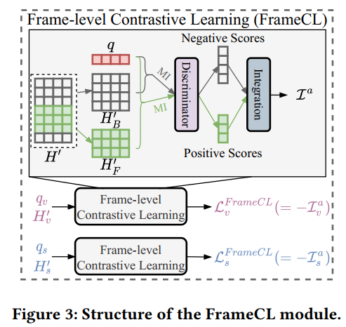
如图中，绿色的部分表示在[st,ed]之间的frames，也就是正样例，其他的为负样例。
目标函数如下：
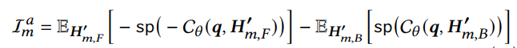
$H_{m,F}’$表示正样例的frame的表示，$H_{m,B}’$表示负样例的frame的表示，$q$表示query的表示。$C_\theta: d \times d \rightarrow \mathbb{R}$表示一个鉴别器。$sp(x)=log(1+ex)$是Softplus activation。同样的，如果有两个通道的话，则取两个通道的平均：$\mathcal{I}^a = \frac{1}{2}(\mathcal{I}_ v^a + \mathcal{I}_ s^a)$。
最终损失为：
$$
\mathcal{L}^{FrameCL} = -\mathcal{I}^a
$$